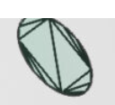

In this article, I am going to explore methods for drawing a circle, and find out which is the best! This article was inspired by "Triangulation"[1] by Emil Persson and "Full screen triangle optimization"[2] by Pekka Väänänen. So, what is the best way to draw a circle? Well, GPUs don't really have a Circle primitive; all they really give us is an efficient way to draw triangles (and lines), so lets start there!
Lets triangulate some circles!
Okay, so I have 5 methods that I chose to explore for triangulating circles. The first method I call "Naive", because it is the simplest way to create a triangle mesh, and is actually the way that I used to triangulate all circles in my 2D renderer for Fission[3]! For Naive, just pick a point as an anchor and go around the circle connecting all the rest of the points. The second method "Fan" is almost the same as Naive, except the anchor point is in the center of the circle, and it costs you 2 extra triangles. The third method is "Strip", where you create a triangle on the very right, and just go back and forth connecting to a vertex above and below, above and below, and so on. What's nice about these first 3 topologies is that they do not require using an index buffer if you use TRIANGLE_FAN or TRIANGLE_STRIP.

The "Quad Fan" comes from a blog[4] by Atlassian I saw when trying to find another article. The library they use to do triangulation is called poly2tri[5], so I downloaded it and tested it out for myself; see my results in poly2tri_circles.svg. It's triangulation doesn't look very good and it seems to converge on having a quad in the center with triangle strips on the edges. But for this method I tried to recreate what was in the article's cover image, by drawing a quad then fan out the edges to make a circle.
The last method "Max Area" comes from an article "Triangulation"[1] by Humus, where they "start off with an equilateral triangle in the center and then recursively add new triangles along the edge".
Here's what all these methods look like side by side:
From prior work[1] the triangulation method that should perform the best is the Max Area method. This is due to long thin triangles being very inefficient for the rasterizer. And, it's also pretty obvious from just looking at how the circles triangulate, that the Max Area is the only one where as you add more triangles, it doesn't seem to really change much. This is because as the triangles get very thin, they also get shorter, which should end up being better to rasterize than long skinny triangles.
Another thing to note is that triangles are not rasterized into pixels, but rather groups of pixels (at least 2x2). The article "Visibility Buffer Rendering with Material Graphs"[6] explains this in greater detail. So having long thin triangles create greater edge perimeter; more edge perimeter means more opportunity for wasted processing during rasterization, as I attempt to depict below.
How's the performance?
To test how each triangulation method performs, I created a test program using Vulkan that renders circles for each of the different methods and measures how long each draw call takes in milliseconds. I also inverted the measurements to see if I could replicate the results from "Triangulation"[1], therefore the units in the Y axis being displayed is (1 / draw time ms) = draw calls per millisecond, so it isn't really framerate that is being displayed, rather the number of draw calls you could expect to execute per millisecond. For the following charts, I tested on my RTX 3070 with a fixed clock speed.
The results agree with prior work, it seems GPUs really haven't changed much in the past decade. You are actually able to clearly see when the vertex work starts to dominate when the performance completely drops off. This is when Max Area will start to scale with the vertex count, as opposed to the pixel count, which is kept constant (in terms of pixels visible).
Something that I found very interesting from the results was how well the Strip method holds up at really high triangle counts. I theorize that due to how triangles are aligned to the pixel grid in the strip method, that less processing ends up being wasted. See the figure below.
To test my hypothesis, I modified the triangulation code for the Strip method, adding a 0.2 radian offset to each vertex; I call it "Unaligned Strip". Here are the results!
It seems my hypothesis was correct! Performance completely fell off a cliff for the unaligned version! And this matches closely with the other triangulation methods not including Max Area.
A single circle is so boring
So who is going to be drawing a circle with 10000+ vertices? Seems a bit ridiculous, I think that a better test would be to draw many circles at a reduced level of detail. I noticed that after around 100 vertices, that there is almost no noticable difference to adding more vertices. So I will continue, using an LOD of 4 (48 vertices) to be optimistic.
And, wait.. why are we spending so much time on approximating a circle with triangles, when we can draw a simplier shape, and then cutout a circle in the pixel shader? This is a very common technique for rendering plants and foliage, called Alpha Masking, or Alpha Testing, or Foliage Cards, or ... whatever you want to call it. The idea is simple, instead of looking up an alpha value in a texture and discarding pixels based on a threshold, we can instead discard pixels that lie outside the circle. (i.e. when x2 + y2 > r2) This allows us to have very simple geometry, while having perfect quality.
I decided on two cutout methods, Triangle and Quad, two of the simplest shapes one could render. So lets test out these new cutout methods against triangulation to see which is better.
Yeah, so the cutout methods are really good, with a 15.5015% and 28.0468% speedup over Max Area for Triangle and Quad cutout respectively. And this difference increases when the circles get smaller and smaller. Here is the scaling for circles of different radii.
It seems that when the circle is bigger, then all the methods perform similarly, and Max Area is probably the best because there are no pixels discarded. But, for small circles, cutout is the clear winner; and this makes sense, because small triangles are just not efficient for GPUs and leads to wasted processing.
Also between the two cutout methods, Quad is good for larger circles and Triangle is good for small circles, as backed up by the data; this also makes sense because Quad has less pixel discards, but with smaller circles, the discards matter less as the larger Triangle just becomes more efficient for the rasterizer.
Conclusion
Final takaway is.. if you are going to be drawing circles, use a cutout! And if you are rendering triangles, then stay away from long thin triangles! I would love to see experimentation done on other 2D shapes such as splines and rounded rectangles. Also, if you plan to take any measurements for yourself, be sure to lock your GPU clocks to get more consistant and reproducable results.
Resources
triangulate_circle.h
Source code for the triangulation methods. (Yes, this is a header-only C library, I just can't help myself!)
draw_circles/main.c
Source code for program used to collect performance data.